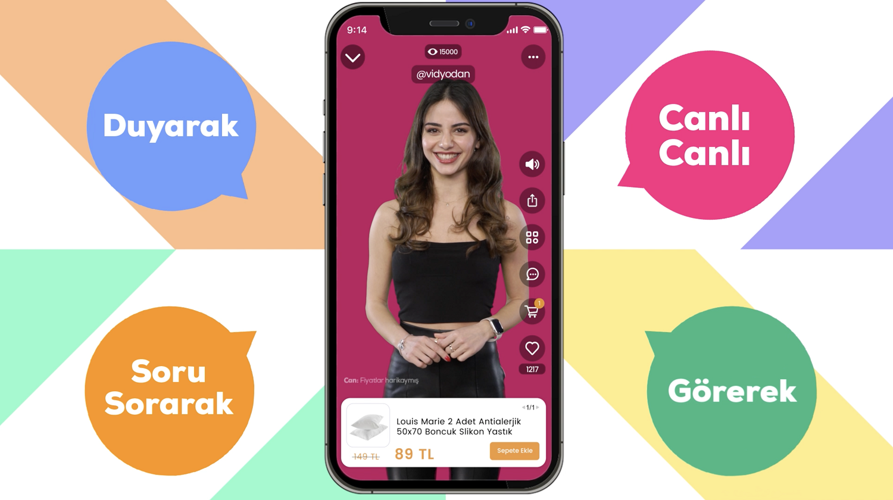
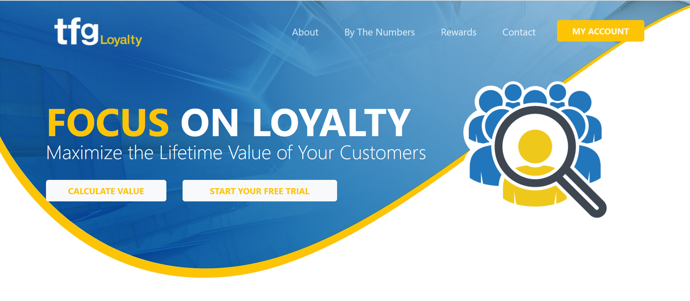
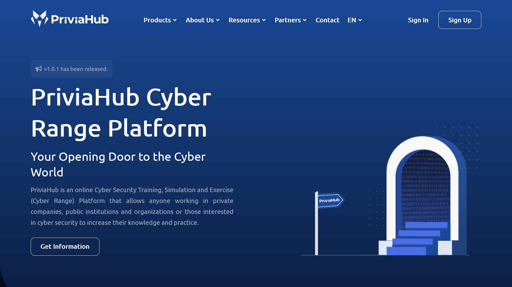

About Me
| Ankara, Turkey | |
| +90 507 906 1137 | |
| mail@alperenbozkurt.net | |
| https://alperenbozkurt.net | |
| September 1997, Ankara | |
| Turkish, English |
My Stack
| Ruby & Ruby on Rails | |
| Html-Css | |
| JavaScript | |
| Git | |
| Docker |
Tags: #OOP #Postgresql #MVC #RESTAPI #TDD #WebSocket #Microservice #AWS #Spree #Linux
Education
Courses
Experience
Back-End Developer
I developed backend of Vidyodan application that is a e-commerce startup that sell products with livestream.
Back-End Developer
I am involved in the development of Create An API and Tfg Loyalty Projects.
Software Team Lead
I wrote priviahub.com using Ruby on Rails, ESX, KVM, Proxmox, Opnsense, pfsense, OpenVpn, WebSocket, Docker and Redis.
Projects
Vidyodan

In VNGRS, I was involved in developing an open-source e-commerce platform, called Spree, for the Vidyodan project.
Vidyodan project is a v-commerce platform focused on explaining and selling products on live broadcasts.
I solved scaling and optimization problems in the application where thousands of people are logged in at the same time.
I took charge of the payment system (Iyzico), reporting (CSV and .xlsx import and export), and integration with other softwares (ios, Android, web application, other RestAPI softwares, XML feeds)
Vidyodan
Tfg Loyality

I was involved in developing the Tfg Loyalty project.
I have worked extensively with TDD practices, enabling me to produce software that
meets high standards of quality and accuracy.
I have worked with AWS services and implemented CI/CD pipelines to ensure efficient
deployment and maintenance of software.
Tfg Loyalty
PriviaHub

I wrote an application that is cyber range portal when I work at Privia Security. I completed public and corporate version of this project. Then I became the leader of the software team.
This application is a virtual polygon for learning cybersecurity, doing practice, testing cybersecurity personals, using in the interviews, and testing the information level of the company personals.
Specifications: Managing virtual machines with Kvm, ESX, Docker.
Users to compete with each other by inviting them to the system. (Tournament system)
Calculating and reporting the users information level.
Managing network and user accounts using Active Directory and OpenVPN.
PriviaHub Public Version
Phishing Automation

Phishing Automation, is an application that is goal automatizing social engineering tests.
Specifications:
Cloning a website using wget and preparing the php application.
Creating docker container of cloned website and manage in SEP application.
Importing users using excel parse and managing them.
Preparing emails using CKEditor and send them.
And Logging.